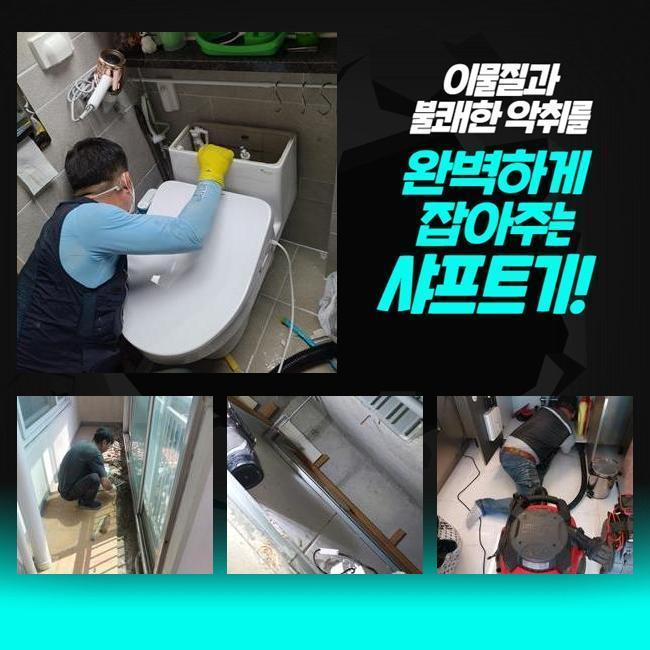
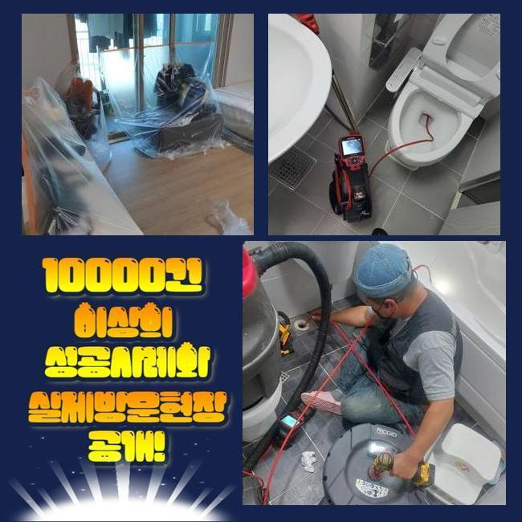
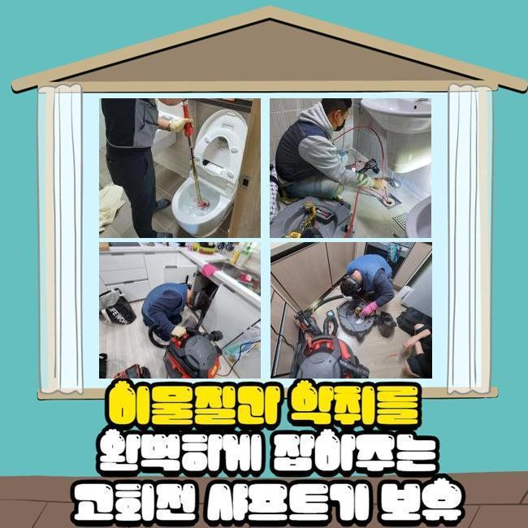
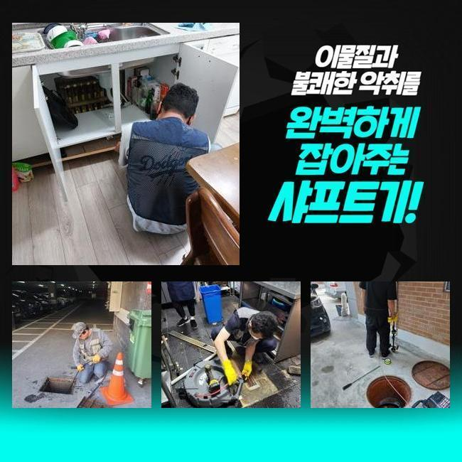
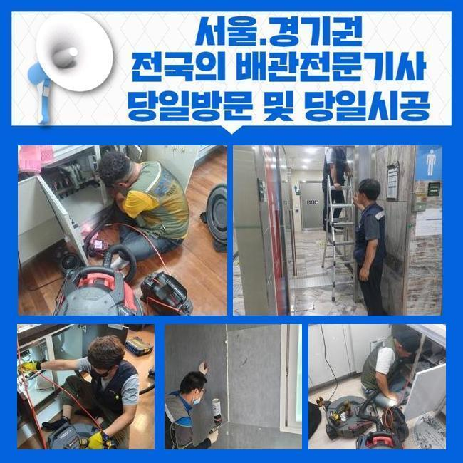

🏠 수원 율천동세탁실뚫음 송죽동 하수구뚫어주는업체 누수탐지공사
수원 하수구막힘 전문 시공 후기

📋 작업 개요
- 위치: 수원
- 서비스 유형: 하수구막힘, 배관막힘, 맨홀막힘, 누수수리, 역류해결, 뚫는업체, 배관청소, 고압세척, 설비공사
- 작업 일시: 2025. 1. 29. 18:44
- 업체명: 하수구수사대 (010-5615-2118)
🔍 문제 상황
수원 율천동세탁실뚫음 송죽동 하수구뚫어주는업체 누수탐지공사
하수시설은 주거지나 가게같은 곳에 당연히 배치되는 시설로써 매우 중요합니다
오염수를 배출하여 청결하고 깔끔한 일상들을 이어나갈 수 있게하고 오염원을 사전에 예방합니다
그러나 배수관이 막혀버려 순환이 되지 못하는 경우엔 안에 쌓여있는 음식물등이 썩는 냄새가 나게되고 화장실이나 주방에서 곤란한 상황이 일어날 수 있어요
이로 인해 하수가 역류하여 넘치거나 깨끗한 물을 사용할 수 없는 상황을 초래하게 되면서 불편감이 증가하실 거예요
아침에 배수구 막힘사고로 긴급한 연락을 받고 서둘러 목적지로 출발했습니다
고객님께서 알려주신 주소지부터 찾아갔어요
전반적으로 살펴보니 집안에 계신 고객님께서 물을 트실때마다 부동전의 배수구에서 오수가 역류하는 상황들이 생겼습니다
특히나 화장실에서 물을 이용하실때 하수관을 통해서 발생하는 고약한 냄새까지 심각했어요

🔎 원인 분석
💡 전문가 진단: 정밀 진단 장비를 사용하여 슬러지의 고착 여부를 판명하고 타격/세척 작업을 실시했습니다.
문제의 정확한 내용을 체크하기 위해서 내시경기기를 통해서 중심관의 안쪽을 살펴보았어요
끈적한 슬러지가 하수관에서 썩는 냄새를 나게하는 상황으로 집안으로 역류하는 등의 사고가 발생하기도 하므로 빠르게 작업을 시작했습니다
중심이 되는 본관의 중요성을 안내 해드릴게요
중심 맨홀는 일상 생활 속에서 배출되는 하수를 내보내는 중심 역할을 합니다
중심관이 막히게 된다면 내부에서부터 넘친 물과 이물질이 누적되며 부동전 방향의 배수구에서 역류해버리는 사태가 일어납니다
이러한 때에는 안쪽에서 배수구만 뚫는다고 해도 문제점을 해결하기 어렵기때문에 중심이 되는 본관을 해결하셔야 이후에 사용이 수월하게 진행되실 거예요
보통 집 안에서 일어나는 사소한 일은 어렵지 않게 해결하실 수도 있지만 여러관이 연결 되어있는 메인 배관은 고압의 세척기계를 투입하여 단단하게 변형된 불순물을 세척합니다
고압세척기기의 노즐라인은 배수라인의 꺾인 부위까지 작업이 가능하므로 신속하고도 정확하게 세척작업이 진행됩니다
본관에 고압의 세척장치를 활용해 머리카락과 이물질등을 청소했습니다
세척이 끝난 후에 내시경기를 이용해서 하수가 잘 나오는지 체크했어요

🔧 작업 과정
의뢰인께서 모니터를 저희와 같이 체크하시고 배수구가 완벽하게 청소된 것까지 확인하시고 난 후에 마무리까지 부탁 하셨어요
다음 현장도 이어서 배수관이 막힌 문제점을 수리하였습니다
둘러본 현장 또한 세탁기가 있는 베란다와 화장실에서 오염된 물이 상습적으로 범람하면서 침전물이 함께 노출되며 악취까지 생기는 상황으로 매우 심각했습니다
이런 경우엔 베란다의 배수구를 통해서 배수관 세정을 진행하는게 일반적인 경우지만 이번엔 작업이 쉽지 않은 트랩 구조로 난관에 봉착했어요
복잡한 구조의 트랩들은 벌레등의 유입을 막는것에 유리하겠지만 모양상 침전물이 쉽게 쌓여서 배관의 막힘을 발생시키는 이유가 될 수 있습니다
P트랩이 설치된 현장은 고압세척장비의 사용이 불가한 상황들이 많아요
노즐의 투입이 힘들기때문에 고객분께 필요하지 않은 금액을 증가시키지 않을 수 있도록 합리적인 작업을 선택해야만 했어요
복잡한 트랩의 구조적인 특성때문에 고압세척기기를 활용하면 하수관에 피해를 줄 수도 있어 샤프트기기를 사용하여 작업하기로 정했어요
샤프트장치는 회전하는 힘으로 하수관에 적재된 불순물을 세척합니다
샤프트기기는 배수라인을 긁거나 피해주지 않으면서 깊숙한 곳에 투입될 수 있어요
장비의 끝쪽에 비질을 하는 듯한 솔을 결합하여 이물질들을 긁어낼 수 있으며 곡선 부분에도 진입시킬 수 있어서 하수관의 끝에 누적되어 있는 불순물도 완벽하게 청소합니다
한번에 완전하게 세척되지 않았으므로 샤프트장비를 계속해서 활용하여 굳어있는 침전물을 청소했어요
세척이 끝난 후에 통수작업이 제대로 순환되는지 확인하였고 고객님도 문제의 배수관을 직접 확인하시고 만족하시며 감사인사를 전하셨습니다
하수설비가 고장났을때 원인을 제거하지 않고 계속 사용하신다면 배수관에 쌓여있는 침전물이 부패되면서 지독한 냄새까지 올라오며 배수가 잘 되질 않아서 오수가 거꾸로 올라오는 상황이 일어나게 됩니다
배수관 속에서 압력이 높아지게 되면 배수라인 내부에 피해가 계속 진행돼 누수와 같은 상황으로 발전되며 고객님의 비용적인 부담감 상승과 시간 손해까지 발생합니다


✅ 작업 완료
배수관 역류상황이 발생하셨다면 전문 기술진에게 문의하셔서 빠른 대응방법을 취하시는게 가장 좋습니다
비슷한 현장 두 곳에서 배수관 역류현상을 해결했고 배수구 악취 세척까지 완벽하게 마무리했습니다
사례자님의 생활 속 습관등을 주의하셔야 한다고 알려드리고 하수관 문제들도 다시 일어나지 않게끔 꼼꼼하게 확인하였습니다
배관의 문제등이 발생하셨다면 지체하지 마시고 저희들에게 의뢰 맡겨주시면 신속정확하게 처리 해드리겠습니다



⚠️ 베란다 누수 및 방수 관리 방법
- ✅ 비가 많이 올 때 창틀 주변이나 아래층 천장에 얼룩이 생기는지 정기적으로 확인해 보세요.
- ✅ 우수관 주변 실리콘 마감이 들뜨거나 깨진 틈새가 있는지 손상 여부를 수시로 체크하세요.
- ✅ 베란다 바닥 타일의 줄눈(메지)이 소실되면 그 틈으로 물이 침투하여 누수가 유발됩니다.
- ✅ 누수 의심 증상 발견 시 방치하면 아래층 손실이 커지므로 즉시 전문가의 진단을 받으십시오.
💡 핵심 정리
- 확실한 장비 작업(내시경 점검 및 샤프트 스케일링)으로 원인을 뿌리 뽑습니다.
- 작업 후 1년 이내에 동일한 부위 재발 시 100% 무상 A/S 서비스를 보장합니다.
- 서울 · 경기 · 인천 전 지역에 24시간 언제든 긴급 출동할 수 있도록 항시 대기 중입니다.
❓ 자주 묻는 질문 (FAQ)
🚨 수원 하수구막힘 문제로 고민이신가요?
정확한 원인 진단과 확실한 시공으로 재발 없는 해결을 약속드립니다.
24시간 긴급 출동 | 서울 · 경기 · 인천 전지역 | 1년 내 재발 시 무상 A/S